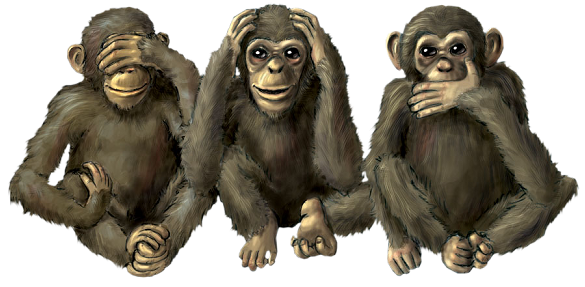

Hello World !
Les singes de la sagesse
Les singes de la sagesse (aussi appelés « les trois petits singes ») est un symbole d'origine asiatique constitué de trois singes, dont chacun se couvre une partie différente du visage avec les mains : le premier les yeux, le deuxième la bouche et le troisième les oreilles. Ils forment une sorte de maxime picturale : « Ne pas voir le Mal, ne pas entendre le Mal, ne pas dire le Mal ». À celui qui suit cette maxime, il n'arriverait que du bien.